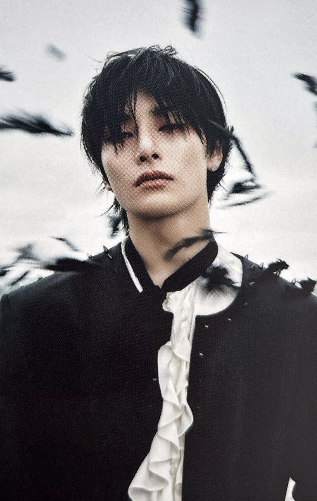
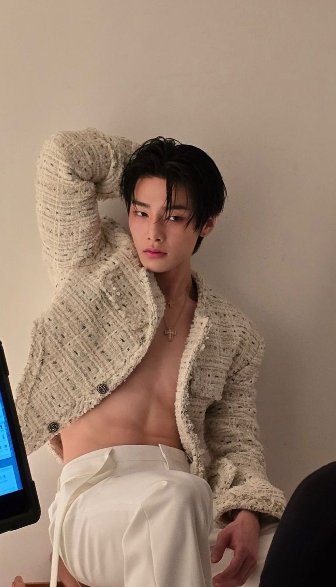
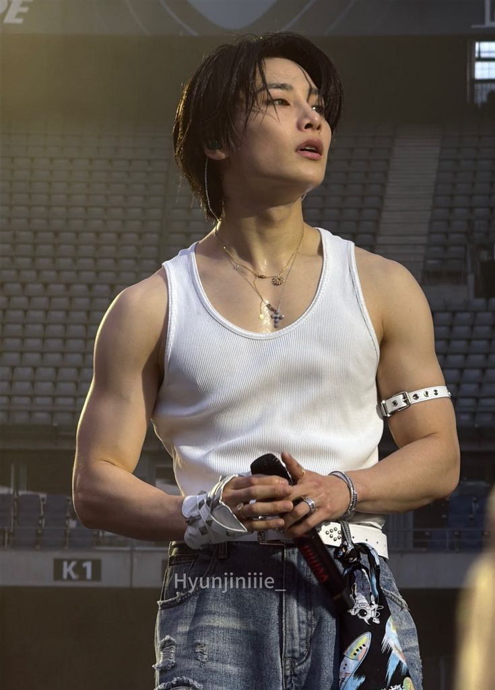

I.N
Perfil
Nombre artístico:아이엔 / アイエン / I.N
Nombre real: 양정인 / Yang Jeong In
Apodos:Innie, Bebé Pan
Profesión: Cantante, Rapero, Bailarín, Productor y Compositor
Fecha de nacimiento:08-Febrero-2001 (24 Años)
Lugar de nacimiento: Busan, Corea del Sur
Estatura: 172 cm
Peso: 55 kg
Tipo de sangre: A
Signo zodiacal: Acuario
Signo zodiacal chino: Serpiente
Familia: Padres, un hermano mayor y un hermano menor.
Agencia: JYP Entertainment
Dramas
A-TEEN 2 (Naver TV, 2019) cameo
Programas de TV
Stray Kids (Mnet, 2017)
Programa de Radio
(SBS) POWER FM Park Sohyun's LOVE GAME (03.11.2018) (junto a Chan y Hyun Jin)
(SBS Radio) NCT Night Night (15.11.2018) (Junto a Seung Min, Han, Felix y Hyun Jin)
Curiosidades
Estudios:School of Performing Arts Seoul (Graduado)
Periodo de entrenamiento: 2 años.
Idiomas:Coreano (Materno), Inglés (Intermedio).
Religión:Católico.
Nombre bautismal:John.
Modelo a seguir:Bruno Mars.
Artista favorito:Charlie Puth.
Hobbies:Escuchar ASMR, escuchar rock y pop, ver videos de Mukbang.
Habilidad:Cantar trot.
Color favorito:Fucsia.
Fue modelo infantil a la edad de 7 años.
Se quiso convertir en cantante luego de que sus mayores le pidieran cantar una canción de Trot.
Si no fuera idol, hubiera sido un maestro en una escuela primaria ya que le gustan los niños.
Tiene 5 canciones con derechos de autor a su nombre en Según Korea Music Copyright Association.
imágenes




